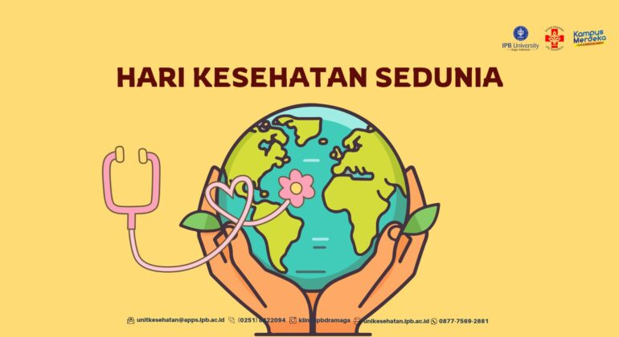

Dipublikasikan pada 30 April 2025
Kehidupan manusia yang bermula dari kesederhanaan kini menjadi kehidupan yang bisa dikategorikan sangat modern. Di jaman yang semakin canggihnya teknologi informasi dan komunikasi yang berkembang saat sekarang, segala sesuatu dapat diselesaikan dengan cara-cara yang praktis. Teknologi informasi dan komunikasi adalah sesuatu yang bermanfaat untuk mempermudah semua aspek kehidupan manusia. Dunia informasi saat ini seakan tidak bisa terlepas dari teknologi. Penggunaan teknologi informasi dan komunikasi oleh masyarakat menjadikan dunia teknologi semakin lama semakin canggih.
Namun, seiring dengan pesatnya perkembangan teknologi ini, ada dampak yang cukup signifikan terhadap kehidupan sosial, budaya, dan bahkan karakter anak-anak. Penggunaan teknologi yang berlebihan, terutama di kalangan anak-anak, dapat mempengaruhi cara berpikir, berinteraksi, dan bersikap mereka.
Teknologi informasi dan komunikasi (TIK) memang memiliki banyak manfaat, terutama dalam dunia pendidikan. Anak-anak yang terbiasa menggunakan perangkat digital dapat mengakses berbagai informasi dan sumber belajar yang sebelumnya sulit dijangkau. Dengan adanya internet, mereka dapat belajar berbagai hal secara mandiri, memperluas wawasan, dan mengembangkan kemampuan mereka dalam berbagai bidang, baik itu akademis, seni, maupun teknologi.
Selain itu, teknologi juga memungkinkan anak-anak untuk berkomunikasi dengan teman-teman mereka di seluruh dunia, yang membuka peluang untuk membangun hubungan sosial yang lebih luas. Platform pembelajaran daring (online learning), seperti video tutorial dan aplikasi edukasi, juga membantu mereka mengembangkan keterampilan praktis dan memperoleh pengetahuan secara lebih interaktif dan menyenangkan.
Namun, tidak dapat dipungkiri bahwa penggunaan teknologi yang berlebihan dapat memberikan dampak negatif, terutama bagi perkembangan karakter anak. Salah satu masalah yang sering muncul adalah berkurangnya interaksi sosial langsung. Anak-anak yang lebih sering terhubung dengan perangkat digital cenderung lebih sedikit berinteraksi dengan teman sebayanya secara langsung, yang bisa menghambat kemampuan mereka dalam mengembangkan keterampilan sosial, empati, dan komunikasi tatap muka.
Selain itu, paparan terhadap konten-konten yang tidak sesuai atau bahkan kekerasan melalui media sosial dan platform online juga dapat memengaruhi sikap dan perilaku anak. Mereka yang terlalu banyak menghabiskan waktu di dunia maya mungkin menjadi lebih agresif, tidak sensitif terhadap perasaan orang lain, atau kurang mampu membedakan mana yang benar dan salah.
Penggunaan perangkat digital yang berlebihan juga dapat berdampak buruk pada kesehatan fisik anak. Waktu yang terlalu banyak dihabiskan untuk bermain gadget atau menonton televisi dapat menyebabkan masalah kesehatan seperti gangguan tidur, obesitas, dan gangguan penglihatan. Ini tentu saja akan mempengaruhi kualitas hidup mereka dalam jangka panjang.
Pengaruh teknologi terhadap perkembangan psikologis anak juga cukup signifikan. Anak-anak yang lebih sering terpapar teknologi dan media sosial cenderung lebih rentan terhadap perasaan cemas, depresi, dan rendah diri akibat perbandingan diri dengan orang lain di dunia maya. Mereka mungkin merasa tertekan untuk tampil sempurna sesuai standar yang ada di media sosial, yang dapat memengaruhi harga diri mereka.
Selain itu, adanya ketergantungan pada perangkat digital dapat mengurangi kemampuan anak untuk fokus pada tugas-tugas yang lebih penting, seperti belajar dan beraktivitas fisik. Mereka mungkin lebih sulit untuk menjaga konsentrasi dalam waktu lama, karena terbiasa berpindah-pindah perhatian dari satu aplikasi ke aplikasi lainnya.
Untuk mengurangi dampak negatif dari penggunaan teknologi pada anak-anak, sangat penting bagi orang tua dan pendidik untuk berperan aktif dalam mengawasi dan membimbing mereka. Salah satu langkah yang bisa diambil adalah dengan menetapkan waktu yang sehat untuk penggunaan perangkat digital, menghindari penggunaan teknologi di waktu tidur, serta memastikan anak-anak mengakses konten yang positif dan mendidik.
Orang tua juga perlu menjadi contoh yang baik dalam menggunakan teknologi, dengan menunjukkan cara penggunaan yang bijak dan seimbang antara waktu untuk belajar, bermain, dan beristirahat. Mengajak anak untuk berinteraksi secara langsung dengan keluarga atau teman-teman sebayanya di dunia nyata akan membantu mereka mengembangkan keterampilan sosial yang penting.
Kemajuan teknologi komunikasi dan informasi memang membawa dampak besar dalam kehidupan manusia, termasuk dalam kehidupan anak-anak. Teknologi dapat memberikan manfaat yang luar biasa, baik dalam pendidikan maupun dalam memperluas jaringan sosial. Namun, jika tidak digunakan dengan bijak, teknologi juga dapat memberikan dampak negatif yang berpengaruh pada karakter, psikologi, dan perkembangan sosial anak.
Sebagai orang tua, pendidik, dan masyarakat, kita harus bijak dalam mengarahkan dan mengawasi penggunaan teknologi oleh anak-anak, agar mereka dapat memanfaatkan teknologi secara positif tanpa mengorbankan perkembangan karakter dan kesehatan mereka. Dengan begitu, teknologi bisa menjadi alat yang memperkaya hidup mereka, bukan justru membatasi potensi yang dimiliki.

Apakah Anda pernah mendengar ungkapan sehat itu mahal? Ungkapan ini memberikan pesan dan makna tentang pentingnya menjaga kesehatan. Saat ini, Anda juga perlu memahami bahwa inflasi kesehatan merupakan realitas yang tidak dapat diabaikan. Dalam hal ini, informasi tentang peningkatan biaya layanan kesehatan menjadi makin penting untuk diketahui, sehingga Anda bisa lebih bijak dalam menjaga kesehatan tubuh.
Baca SelengkapnyaDiantara hewan peliharaan yang umum dan banyak dipelihara adalah kucing. Kucing bagi para pecintanya, adalah hewan yang sangat menyenangkan bahkan menjadi ‘teman setia’ penghilang lelah dan stres setelah seharian bekerja. Memelihara kucing ternyata bukan hanya sekedar hobi ada beberapa manfaat yang bisa diperoleh, berikut diantaranya yang didapat penulis dari beberapa sumber :
Baca SelengkapnyaPiki Alpian
Artikelnya informatif banget, jadi makin sadar pentingnya tidur!
Alifa Gustia Rahmi
Wah, saya juga lagi coba perbaiki pola tidur nih. Makasih!